محصول، دقیق تا آخرین میلیمتر.
دفتر طراحی محصول برای سازندگان چراغ، مبلمان و ابزار؛ از خطوط اولیه تا قطعهٔ آمادهٔ ساخت.

＋ ABB. 01متریالآلومینیوم آنودایزابعاد۴۲۰ × ۱۸۰ میلیمترسال۱۴۰۵فرایندتولید سری
محصولات
خدمات برای تولیدکننده
- طراحی صنعتی
- فرم، کارکرد و روش ساخت را کنار هم میسنجیم.
- نمونهسازی
- یک مدل واقعی میسازیم تا ابعاد در دست و فضا سنجیده شود.
- همراهی تولید
- از انتخاب متریال تا هماهنگی با کارگاه.
از کاغذ تا سری تولید
- ترسیم
- نیاز واقعی و محدودیتهای ساخت
- مدل
- نمونهٔ اولیه برای آزمون و بازخورد
- تولید
- نقشهها و جزئیات نهایی
یک دفتر کوچک؛ یک کارگاه واقعی.
اسکچ و مدل فیزیکی روی یک میز شکل میگیرند. هر اتصال را پیش از رفتن به خط تولید در مقیاس واقعی بررسی میکنیم.
پرسشهای رایج
برای شروع چه اطلاعاتی نیاز است؟
نوع استفاده، ابعاد تقریبی، ظرفیت تولید و متریال پیشنهادی.
میتوانم یک محصول قدیمی را بازطراحی کنم؟
بله؛ عکس و جزئیات محصول فعلی را به خلاصهٔ پروژه اضافه کنید.
از محصولتان برای ما بگویید.
 انتخاب این طرح
انتخاب این طرح